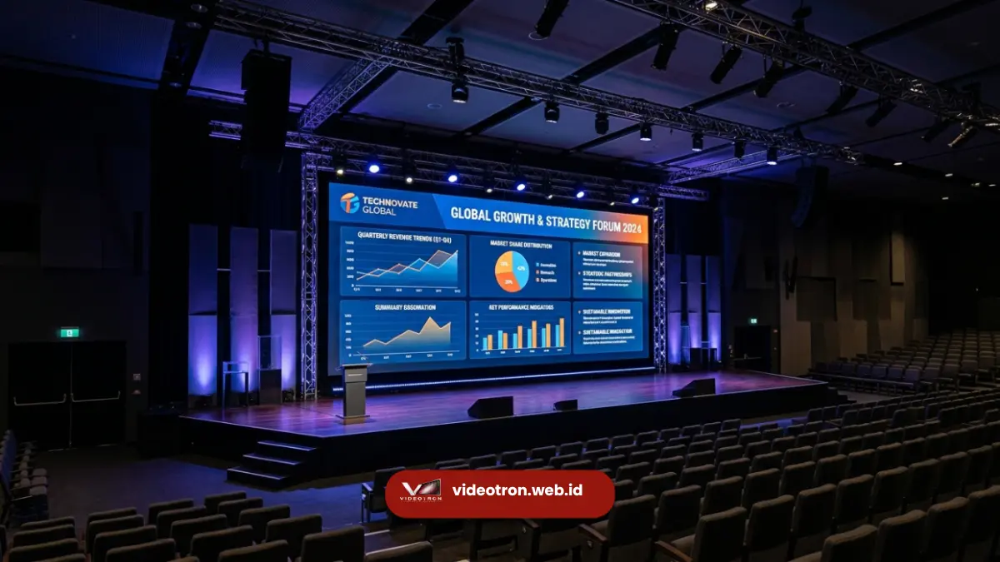

Pelajari 5 fungsi utama videotron untuk meningkatkan branding, awareness, dan keterikatan audiens bisnis Anda. Baca selengkapnya bersama Tim Ahli Videotron.web.id.
Peran Strategis Layar LED dalam Bisnis Modern
Fungsi videotron dalam ekosistem bisnis modern adalah sebagai media komunikasi visual dinamis yang memadukan kekuatan branding interaktif, penyebaran informasi real-time, dan peningkatan estetika lingkungan.
Dengan kemampuan menyajikan iklan video resolusi tinggi secara terus-menerus, videotron terbukti mampu menarik perhatian audiens hingga 400% lebih tinggi dibandingkan media cetak statis, menjadikannya instrumen investasi branding paling efisien untuk korporasi, ritel, maupun sektor pelayanan publik.
Dunia pemasaran visual telah berubah total. Konsumen masa kini cenderung mengabaikan baliho cetak tradisional yang cepat pudar dan tidak dinamis.
Untuk memenangkan perhatian calon pelanggan, pelaku bisnis dituntut menyajikan materi promosi interaktif yang bergerak dan beresolusi tinggi di lokasi-lokasi strategis.
5 Fungsi Utama Videotron bagi Organisasi & Korporasi
Implementasi layar LED besar melampaui fungsi periklanan biasa. Berdasarkan data instalasi aktual, berikut adalah lima fungsi utama videotron dalam mendukung kegiatan bisnis dan komunikasi publik:
1. Media Periklanan Luar Ruang Dinamis (DOOH)
Sebagai billboard elektronik luar ruang, layar raksasa ini menampilkan kampanye pemasaran bergerak yang dinamis dan berjadwal otomatis. Hal ini sangat berguna untuk mempromosikan produk retail di mal mewah.
2. Peningkatan Estetika dan Prestise Arsitektur
Videotron membantu mempercantik dan memberi nilai tambah pada sasis bangunan mal, lobi kantor pusat, maupun area panggung pameran dengan visualisasi lanskap digital yang estetik.
3. Pusat Kendali Informasi (Command Center Display)
Instansi pemerintah dan militer memanfaatkan layar seamless resolusi tinggi untuk memantau visualisasi grafik data operasional secara real-time. Informasi lengkap mengenai hal ini tersedia pada panduan pemasangan videotron command center kami.
4. Sistem Media Informasi dan Promosi Ritel
Pusat perbelanjaan, butik fashion, dan restoran cepat saji menggunakan panel tipis untuk menyajikan katalog digital dan menu promo yang diperbarui secara instan. Detail teknologi ini dapat dilihat di halaman sistem digital signage ritel kami.
5. Saluran Penyebaran Informasi Publik Real-time
Membantu lembaga publik seperti rumah sakit, stasiun kereta api, dan bandara menyiarkan informasi darurat, pengumuman layanan, antrean, dan jadwal keberangkatan secara cepat dan akurat.
Matriks Korelasi Fungsi dan Contoh Penerapan
Berikut adalah matriks korelasi antara fungsi utama layar videotron, sektor industri pengguna terbaik, serta contoh konten visual yang ditampilkan:
| Fungsi Utama | Sektor Pengguna Terbaik | Contoh Konten Visual yang Ditampilkan |
|---|---|---|
| Media Periklanan Luar Ruang (DOOH) | Agensi Periklanan, Brand Retail Besar, Mal | Video komersial produk, promo musiman, iklan merek 3D interaktif. |
| Pusat Kendali & Informasi (Command Center) | Instansi Pemerintah, Korporasi, Kepolisian | Monitoring data jaringan real-time, grafik statistik, feed CCTV kota. |
| Media Dekorasi Panggung & Event | Event Organizer, Hotel, Promotor Konser | Latar belakang dinamis panggung (background visual), materi presentasi seminar. |
| Informasi Layanan & Branding Publik | Rumah Sakit, Bandara, Kantor Pelayanan Pajak | Antrean digital, pengumuman darurat, video profil instansi, jadwal penerbangan. |
| Penunjuk Jalan & Estetika Kota (Signage) | Pemerintah Kota, Pusat Bisnis Terpadu | Iklan layanan masyarakat, jam digital kota, informasi lalu lintas terkini. |

Penerapan videotron indoor sebagai latar belakang panggung seminar perusahaan untuk visualisasi materi presentasi yang memukau.Investasi pada teknologi videotron memberikan dampak branding yang terukur bagi perusahaan modern.
Melalui kemampuannya yang sangat dinamis, konten Anda tidak sekadar tayang, melainkan hidup dan berinteraksi secara visual dengan audiens target Anda.
Kesimpulan & Rekomendasi Solusi
Memanfaatkan videotron untuk branding dan komunikasi bisnis bukan sekadar mengikuti tren visual, melainkan strategi kunci untuk meningkatkan engagement dan citra profesional perusahaan di era digital. Baik untuk etalase ritel, command center, maupun billboard jalan raya, pilihlah spesifikasi LED yang tepat sesuai target audiens Anda.
Diskusikan proyek pengadaan dan instalasi videotron bisnis Anda bersama tim ahli Vendor Videotron untuk mendapatkan solusi visual terintegrasi dengan penawaran harga terbaik.

Hawa Nadira
LED Technology Consultant & Visual Educator
Konsultan dan spesialis solusi display digital berdedikasi tinggi yang fokus membagikan panduan edukatif mengenai penerapan teknologi layar LED videotron untuk kebutuhan interior modern di Indonesia.